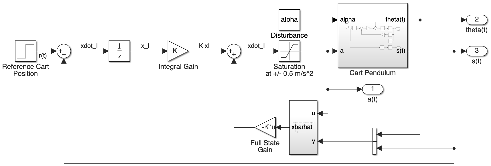
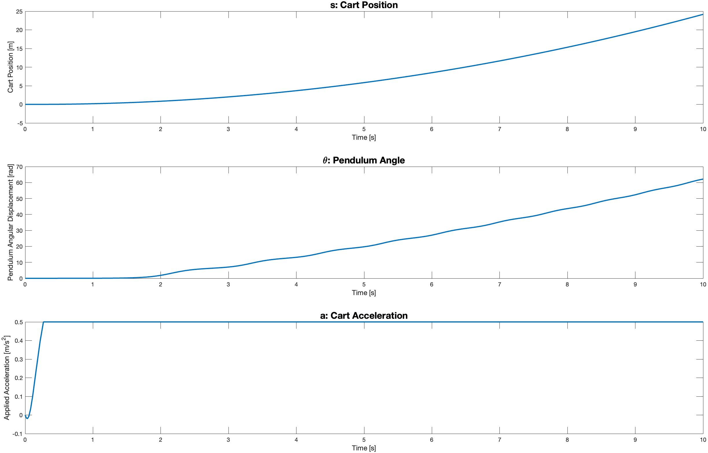
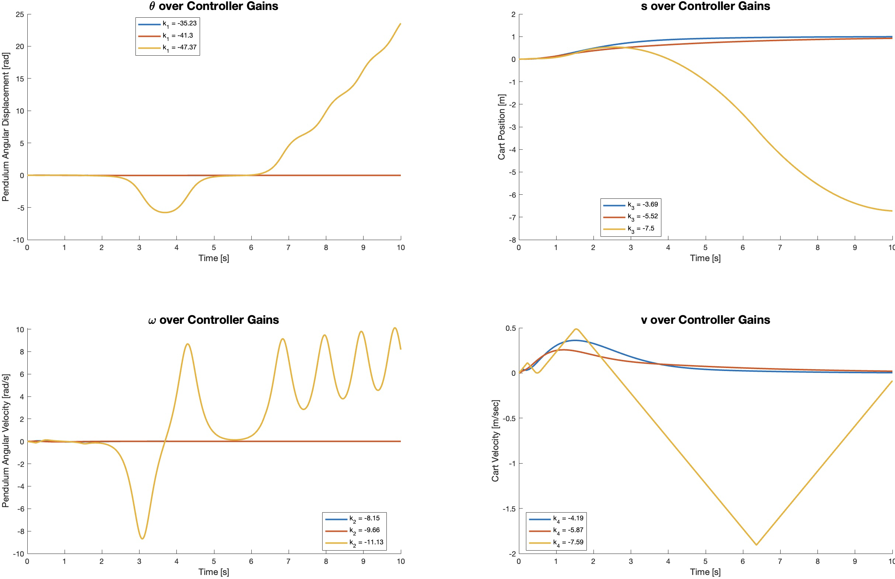

The problem
We designed a controller for an inverted pendulum mounted on a moving cart. The task was to keep the pendulum near upright while moving the cart to a target one meter away. The design brief called for the cart to reach the target within ten seconds without overshoot, while limiting acceleration to ±0.5 m/s².
My contribution
My teammate and I worked together on the mathematical model, controller design, Simulink simulations, and final report. We also tested linear quadratic regulator (LQR) control. This was a simulation project.
Building the controller
We linearized the equations of motion around the upright position and represented the system with four states: pendulum angle, angular velocity, cart position, and cart velocity. After checking controllability and observability, we designed state feedback through pole placement and added integral action to address cart-position error.
We also built an observer to estimate the states from pendulum-angle and cart-position measurements. MATLAB handled the state-space calculations and gain selection; Simulink connected the controller and observer to the original nonlinear plant, including the acceleration limit and an angular-acceleration disturbance.


Controller and observer
The Simulink model combines integral action, state feedback, an observer, and acceleration saturation.
Testing and iteration
Our initial gains demanded more acceleration than the cart could provide. The input saturated, the pendulum moved beyond the small-angle region, and the cart failed to reach its target. That made the nonlinear simulation essential to evaluating the design.
We adjusted the pole placements and gains, then compared the resulting cart motion, pendulum motion, and acceleration. In the tuned simulation, the cart approached the one-meter target as its velocity decayed. We also tested linear quadratic regulator control, changing state and input weights to explore the tradeoff between tracking and control effort. The comparison included settings that destabilized the simulated system.


Before tuning
The initial gains saturate the acceleration input while cart position and pendulum angle diverge.


Comparing LQR weights
Changing the LQR weights produced different simulated responses, including an unstable case.
What the results showed
The simulations showed how actuator saturation and disturbance assumptions could limit a controller designed from a linear model. Faster observer dynamics also produced more oscillation in the control input. Our report documents both the improved response and the conditions where performance broke down; the work did not include hardware validation.